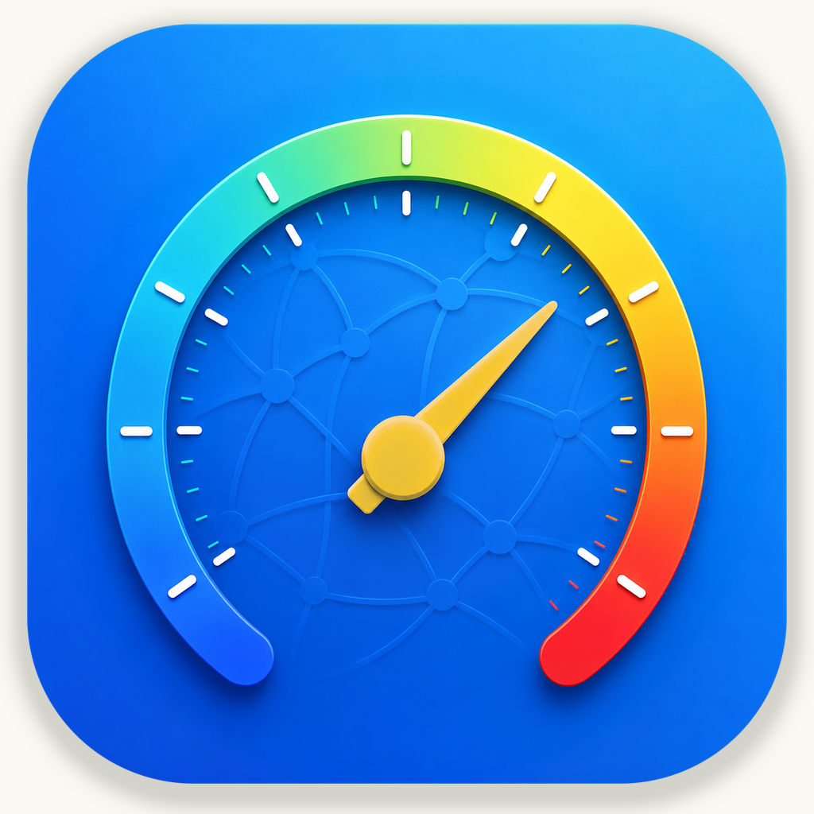

01 / 记录随手记下今天，让常用信息随时在手边。本地记事常用卡片历史与附件移动端离线首版Mac 版及历史移动版本的功能可能不同。计划上架的 iPhone、iPad 首版提供本机记事与现有附件预览，暂不提供跨设备同步。了解老野记事 →隐私政策 ↗iPhone、iPad 离线首版即将上线，暂无正式下载链接。
02 / 连接看见网络的状态，更清楚每一次连接。下载与上传延迟与抖动网络诊断本地历史在 Mac、iPhone 与 iPad 上查看测速结果。Mac 另提供内网存储测速与泄露检查，帮助了解不同场景下的网络表现。了解老野网测 →隐私政策 ↗网络功能会向第三方服务发起请求。即将上线，暂无正式下载链接。
 OLD SOUL, WILD HEARTv1.0.4
OLD SOUL, WILD HEARTv1.0.4